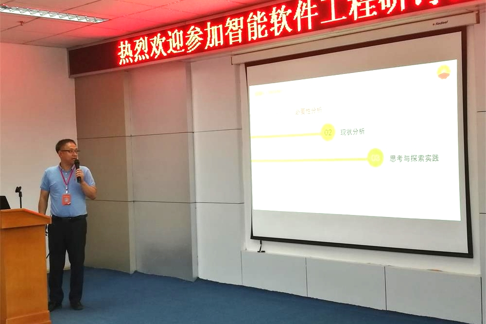

2019-智能软件工程研讨会


会议主题：
软件工程智能化技术研究
会议简介：
智能化是当前软件工程的主要发展方向之一，网络与人工智能技术的发展为解决复杂巨型软件系统开发问题提供新思路， 为进一步实现需求生成自动化、系统设计和实现自动化，软件开发分工化提供技术支持。 本次会议于2019年7月26日在我校计算机与信息技术学院会议室举办，各大高校和科研院所的软件工程专家及代表参加了此次会议.
会议议程：

专家简介：张莉，教授，博士生导师。现任软件学院副院长、计算机学院软件工程研究所所长，教育部软件工程专业教学指导委员会委员，
北航校务委员会委员。全国软件工程领域专业学位研究生教育协作组组长。中国工程教育专业认证专家。
计算机学会软件工程专委委员、教育专委会副主任、中国电子学会云计算专家委员会委员。全国高等学校计算机教育研究会常务理事。
国家精品课负责人，北京市教学名师，北京市教育工会教育创新标兵；
北京市“三八”红旗奖章获得者。主要从事智能化软件工程、需求工程、模型驱动的方法等相关的技术研究和开发工作。
先后主持和参加了国家自然科学基金、国家973项目、航空基金、国家科技计划项目、国防预研项目、中美、中欧国际合作项目和企业应用项目。
在国际会议、国内外刊物上发表学术论文近200篇，多次担任国际学术会议程序委员会主席和程序委员会委员。
曾入选北京市科技新星计划、教育部"新世纪优秀人才支持计划"等。多次获得国家教学成果、北京市教学成果奖、国防科技进步奖等奖励。
精彩瞬间：


PPT：无
视频：报告视频
录音：报告录音
专家简介：张莉，教授，博士生导师。现任软件学院副院长、计算机学院软件工程研究所所长，教育部软件工程专业教学指导委员会委员，
北航校务委员会委员。全国软件工程领域专业学位研究生教育协作组组长。中国工程教育专业认证专家。
计算机学会软件工程专委委员、教育专委会副主任、中国电子学会云计算专家委员会委员。全国高等学校计算机教育研究会常务理事。
国家精品课负责人，北京市教学名师，北京市教育工会教育创新标兵；
北京市“三八”红旗奖章获得者。主要从事智能化软件工程、需求工程、模型驱动的方法等相关的技术研究和开发工作。
先后主持和参加了国家自然科学基金、国家973项目、航空基金、国家科技计划项目、国防预研项目、中美、中欧国际合作项目和企业应用项目。
在国际会议、国内外刊物上发表学术论文近200篇，多次担任国际学术会议程序委员会主席和程序委员会委员。
曾入选北京市科技新星计划、教育部"新世纪优秀人才支持计划"等。多次获得国家教学成果、北京市教学成果奖、国防科技进步奖等奖励。
精彩瞬间：


PPT：报告PPT
视频：报告视频
录音：报告录音
专家简介：高晖，博士，高级工程师。中国船舶工业系统工程研究院共性技术中心副主任，中国航空学会信息融合分会常务委员，
智能船舶1.0研发专项技术咨询委委员，信息融合学报编委。主要从事舰载作战管理系统研发， 各类舰载装备软件总体设计、体系结构研究及装备产品研发等工作，
业务范围包括：编队/航空兵/本舰指挥控制系统，一体化综合侦察系统、无人机综合任务控制设备等。相关研究成果获中船工业集团科技进步特等装1项，一等奖2项，
在学术刊特，国内外会议上发表论文10余篇。
精彩瞬间：

PPT：报告PPT
视频：无
录音：无


专家简介：樊志强，中国电子科技集团公司第十五研究所，高级工程师，青年科技委员会委员，工学博士，北航软件学院兼职导师，
北京市城市管理委员会专家。长期从事大型信息系统论证设计、验证评估等方面的研究工作，研究方向包括体系架构设计方法、信息系统仿真验证技术 、
体系能力评估分析技术等。近年来，承担了多项全军预研、条件建设、军内科研等项目。获得集团科学技术二等奖1项，发表学术论文10余篇，申请国家发明专利和国防专利10余项。
精彩瞬间：


PPT：无
视频：无
录音：无


专家简介：蒋竞，助理教授，硕士生导师。现在北京航空航天大学软件工程研究所从事教学与科研工作，
主要研究方向包括智能化软件工程、经验软件工程、开源软件社区分析、基于机器学习的推荐技术等。
指导1名硕士获得校级优秀硕士学位论文，指导或者协助指导的3名硕士获得国家奖学金。曾获得北京航空航天大学“蓝天新秀”称号。
主持国家自然科学基金、北京市自然基金、软件开发环境国家重点实验室开放课题和华为公司创新研究计划等多个科研项目。
参加国家重点研发计划等项目。多篇论文发表在国际著名学术期刊和会议，
例如Empirical Software Engineering、Information and Software Technology
和Journal of Systems and Software等。
精彩瞬间：

PPT：报告PPT
视频：报告视频
录音：报告录音
专家简介：金刚，1987年毕业于大庆石油学院（东北石油大学前身），师从柴之聪、李春生教授等名师。现在大庆油田勘探开发研究院应用软件研究室任职。
大庆油田勘探开发研究院是大庆油田的技术参谋部，职责是为油田可持续发展提供勘探开发核心技术支撑和技术保障。
研究院信息系统（油田数据中心）面向全油田提供从事高性能计算、基础网络、油田勘探开发数据汇交、管理和服务、油田勘探开发专业软件集中管理、特色软件和经营管理工程化开发、
A1、A2、ERP等统建系统技术支持服务等工作，在油田行业具有人才众多、技术领先等优势，是油田一支重要的信息化技术支持队伍。
精彩瞬间：


PPT：报告PPT
视频：报告视频
录音：报告录音


专家简介：杨致怡，中国船舶工业系统工程研究院研究员，长期从事综合电子信息系统和船载战斗系统研究工作。
承担我国第一型出口型海军C4I系统研发，某出口型护卫舰战斗系统研发，第一款出口型作战管理系统的研发。
成果广泛应用到阿尔及利亚，巴基斯坦，缅甸等国。
精彩瞬间：

PPT：无
视频：无
录音：无